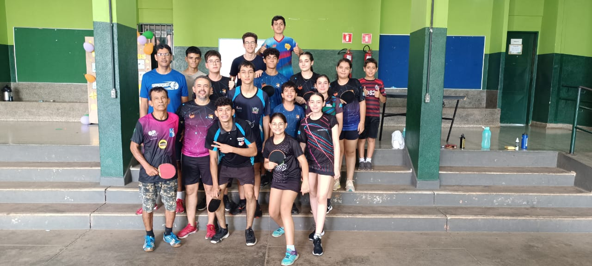

Seja bem-vindo!! Leia e entenda mais sobre o projeto de Tênis de Mesa da E. E. Cel. Juvêncio
Sobre o projeto:
Foi fundado no ano de 2014 pelo Professor Mestre Walteir Souza e sua esposa, Sandra Regina Bazzanella, com o objetivo de proporcionar atividades de lazer para os alunos. Ao longo dos anos, o projeto ganhou grande popularidade, atraindo um número crescente de estudantes. Alguns desses alunos se destacaram significativamente, alcançando pódios em competições e elevando o nível técnico dos atletas da escola. 
Na aba "Objetivos" você pode conhecer mais sobre os objetivos, as competências e os benefícios do esporte na saúde física e mental dos estudantes com foco no Tênis de Mesa
Na página"Galeria" você pode se aprofundar em fotos de treinamento, galeria de comemorações e resultados do projeto ao longo dos anos.
Em "Depoimentos" você pode conhecer a história inspiradora de atletas, famílias e treinadores participantes do projeto
Já em "Treinamentos" você consegue conhecer de forma mais detalhada cada treinamento feito na escola com a intenção de inspirar novas instituições a promoverem seus próprios projetos